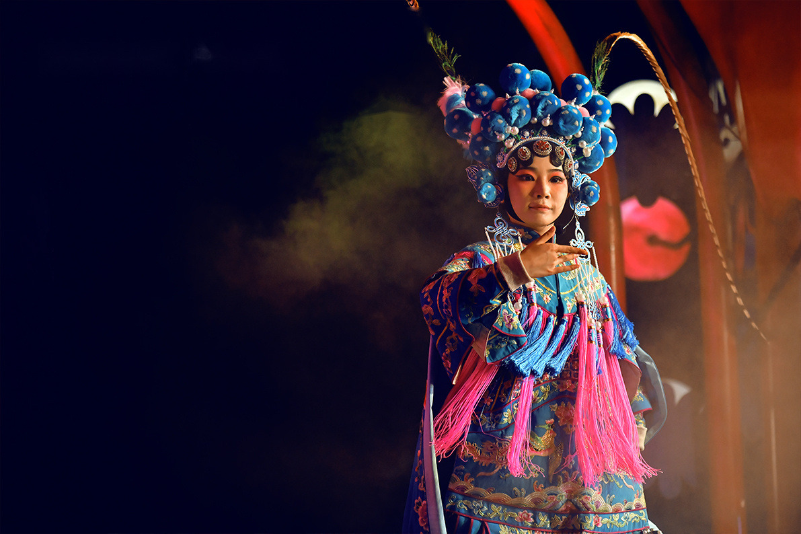

Planning
Journeys drawn to a particular brief.

Zhuxi · north-western Hubei
Zhuxi sits in the Qinba mountains of north-western Hubei, where Hubei, Shaanxi and Chongqing meet, under the city of Shiyan. From Shiyan, Xi’an is about an hour and ten minutes away by high-speed rail; the journey on to Zhuxi is about an hour and a half by car, or about two and a half hours by coach.
The older name of the county town was Wuling — the name that opens Tao Yuanming’s Peach Blossom Spring. In that account a fisherman follows a stream of blossom into a hidden valley, where people live quietly, beyond the world’s trouble. For Chinese people it has never been only a place on a map, but the image of a spiritual home: a simple life, close to the nature, left in peace. Local tradition holds that Zhuxi belongs to that story; we repeat the claim as it is told here, not as a settled fact. What you find is a county that still feels like such a home.
Here stands what is held to be China’s earliest Great Wall — the Chu wall, more than four hundred years before the wall of Qin Shi Huang. Yunyang Heart, a natural twenty-two-kilometre path, traces a heart and gives a home to the old image of China as an oriental rooster.
It is spoken of as the natural heart of China, a green lung at the meeting of three provinces, with forest a little over four-fifths of the land and summers around 22°C. This is one of the places in China that can still produce fine raw lacquer, and a country of tribute rice and of tea hills at Longwangya and Meiziya. At Guanya, the pass looks out over two provinces, and local tradition treats it as the source of the phrase “Qin by morning, Chu by night.” After dark in the county town, Shan’erhuang — a Qinba opera sometimes called the mother of Han opera — is played among the lanterns of Wuling Night City. Admission to the street is free.
Zhuxi Intangible Heritage Masterclass
Journeys drawn to a particular brief.
We will help you with Visa and packing checklist things.
Hotels, flights and trains, chosen for value as well as for fit.
We will be with you for the whole of the journey.
Sunday. A complimentary transfer meets you at Shiyan — the airport or the high-speed rail station — and takes you to Zhuxi. The afternoon is for finding your room and walking the grounds if you wish.
You stay at one of the two houses: Hangtu Heritage Park, or the lacquer-theme guesthouse in the village.
Monday. The morning is spent in the studio at the International Lacquer Art Village, at intangible-heritage lacquer painting. In the afternoon, a visit to the raw-lacquer museum and the Yanjing Bajue gold-lacquer inlay hall in Zhuxi.
Tuesday. Another morning at the bench. In the afternoon, a walk at Jixinling, and the Yunyang Heart — a naturally formed path in the shape of a heart, about twenty-two kilometres if you walk all of it. A shorter stretch is arranged to suit how you like to go.
Wednesday. A third morning in the studio. The afternoon is for Longwangya: the sea of clouds over the tea gardens, time among the rows, and tea-making. Meiziya tea is spoken of here as a tribute tea.
Thursday. A full day out, arranged in advance, in one of three shapes.
Seek the Way on the range: a first look at the halls and the hills, or a quieter walk, depending on how you like to go. The pilgrimage to the Golden Summit, if you choose it, uses the park’s own transport.
A raw-turquoise mining site, the Yun’gai mine museum, and the Majiadu International Turquoise Trading Centre.
A visit to the dam at the source of the South–North Water Transfer, and the water country around it.
Friday. A slower day, closer to the houses. Time at Hangtu Heritage Park to see and try the living crafts — the programme speaks of eight; we will set out what is actually being taught once we know your dates — and, if you wish, a return to the studio or a last walk in the lacquer village.
In the evening, if you like, the remade street at the West Gate, and Shan’erhuang among the lanterns.
Saturday. A complimentary transfer back to Shiyan — the airport or the high-speed rail station.
Where you will Stay
Hangtu Town, Zhuxi
The house is built of the earth itself: walls rammed from the raw soil, left with their natural grain, their pores, and the marks of time. It is a plain and substantial kind of luxury, without pretence — still, and with a weight of its own.
Underfoot are old blue bricks, worn and warm. To walk barefoot on them is to feel the house close to the ground, a retreat into the land rather than away from it.
On the Zhuxi intangible-heritage week you stay here, or at the lacquer-theme guesthouse in the International Lacquer Art Village, not at both. Breakfast is included. Dates are confirmed on request.
The house offers singles, doubles, triples, family rooms for four, and family rooms for five or six.
International Lacquer Art Village, Zhuxi
The long craft of Chinese lacquer — a living heritage of several thousand years — is set quietly into the rooms. When light passes over a wooden table and a lacquered surface, it comes back as a deep, warm sheen.
This is a house of time and of making. You sleep among the scent of wood and lacquer, and in the slower pace of the days, find again a steadier ground.
On the Zhuxi intangible-heritage week you stay here, or at Hangtu Heritage Park, not at both. Breakfast is included. Dates are confirmed on request.
The house offers singles, doubles, triples, family rooms for four, and family rooms for five or six.
Zhuxi
The steamed basin, zhengpen — 竹溪蒸盆 — is worth sitting down for properly: a clay pot of some eighteen ingredients, steamed for five or six hours, until the broth is deep and clear.
It is a provincial intangible-heritage dish, and the form a welcome takes in this county.
Beside the steamed basin, the county also has simpler, everyday dishes: sour-and-spicy konjac tofu, bacon cured over a wood fire, and lan tofu — 懒豆腐 — soy and rice ground together and cooked into a soft pot, named for how little fuss it asks. Sesame cakes and wan’ergao — 碗儿糕, a steamed cake of rice and bean — are still made by hand in the town; from the hills there is also the old tribute tea of Meiziya.
Practical
What the week includes, and how we work.
Make an enquiry
By filling up this form, you help us better understand your needs and wants in order to recommend an itinerary that matches you.